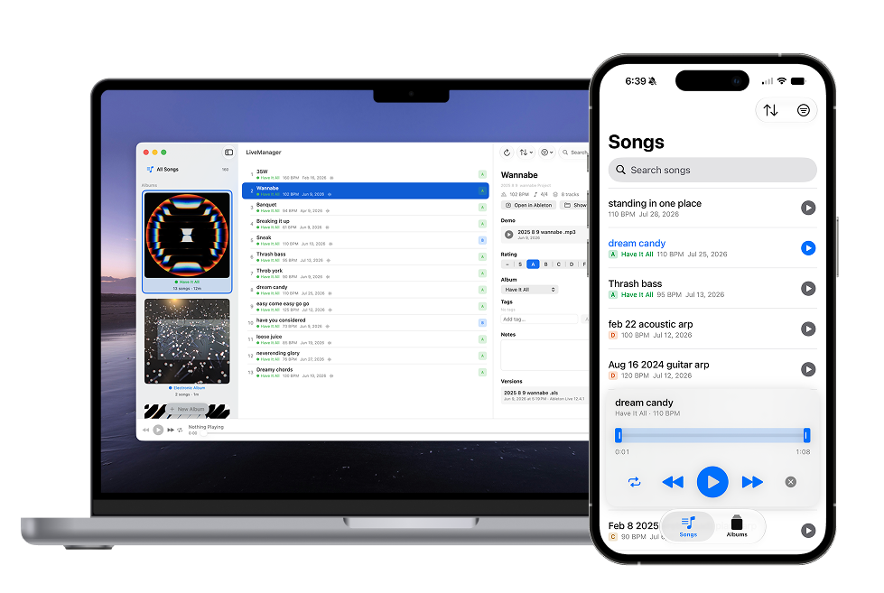

Organize your Ableton Live sets with Albums, ratings, tags and more. Audition your tracks, loop sections and play them on the go with the LiveManager iOS app, all for free.
Download for MacOSUnzip and drag LiveManager to your Applications folder.
On first launch, choose the folder where your Ableton projects live.
LiveManager reads your sets to catalogue them — it never modifies your projects.
Your library syncs through your own private iCloud, so ratings, notes and loop points follow you between the Mac app and the iPhone companion. Grab the iPhone app from Help → Get the iPhone App… inside LiveManager.
Updates are automatic. Once installed, LiveManager checks for new versions on its own and can install them in one click — you only need this page for the first install.
